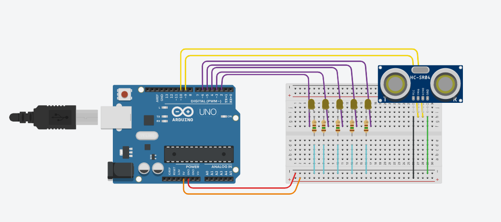

Popis projektu
V tomto mini projektu jsem navrhl a zrealizoval funkční obvod založený na desce Arduino Uno. Postupoval jsem od návrhu schématu přes zapojení na breadboard, připojení senzorů a aktorů až po napsání sketchu v Arduino IDE a jeho nahrání do mikrokontroléru. Cílem bylo vytvořit jednoduchý systém mé volby. Zvolil jsem si parkovací senzor jako projekt.
Při práci jsem se zaměřil na správné napájení, ochranné prvky (rezistory, diody), a bezpečné propojení mezi Arduinem a externími komponenty. Projekt zahrnoval také ladění ultrazvukového senzoru a a spojení s LED diodami. Nakonec jsem systém vyzkoušel v praxi. Připevnil jsem senzor na kapotu auta a vyzkoušel jeho funkčnost při parkování

Ukázka zapojení v programu Tinkercad
Co jsem se naučil
-

- Zapojení na breadboardu - správné propojení, použití rezistorů, pull-up/pull-down a ochranných diod
- Analogové a digitální piny - měření senzoru (ADC) a čtení digitálních vstupů
- Debugging - ladění hodnot, kontroly stavu a řešení chyb
- Bezpečnost a napájení - rozhodování o zdrojích napětí a ochraně obvodů
Průběh práce
Návrh obvodu
Vytvoření základního schématu a výběr součástek.
Prototypování
Zapojení na breadboardu a testování funkčnosti.
Programování
Nahrání firmware do mikrokontroléru a ladění.
Testování a ladění
Ověření funkcí, měření a případné úpravy.
Galerie projektu
Zapojení na breadboardu
Osazené PCB

Krátké demo (video)
Výsledky a soubory
Projekt byl úspěšně dokončen s následujícími výsledky: